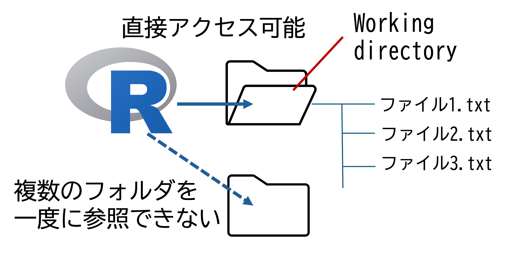
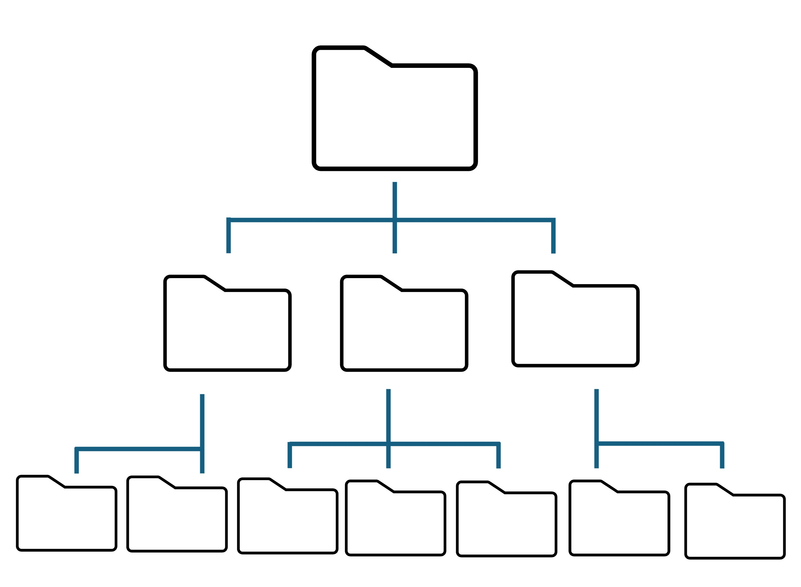

current_dir = getwd()
print(current_dir)プログラムの基礎
1. フォルダの階層性
Rをはじめとしたプログラムは、1つのフォルダ上で作業を行う.言い換えると、他のフォルダにあるファイルを直接参照することはできない.
この参照しているフォルダをworking directoryと呼ぶ.
プログミングを行う際は、自分がどこのフォルダにいるのかを理解しないと、読み込みたいファイルを読み込めなかったり、結果の出力先がどこかわからないという事態に陥る.

絶対パスと相対パス
コンピューター内で、ファイルは木構造のような階層性をもって管理される。
つまり、根っこにある大元のフォルダの中に細分化されたフォルダがあり、それらのフォルダそれぞれにさらに細分化されたフォルダがある。

このフォルダの所在をパス(Path)と呼ぶ.
フォルダの指定の仕方は２通りある.
絶対パス
根っこにある大元のフォルダ(rootフォルダ)を起点とした記述方法.
例：/root/folder/branch/leaf相対パス working directoryを起点としたパスの記述方法
例1：working directoryがfolderの時のleafフォルダの指定
branch/leaf← フォルダ間は/（スラッシュ）で区切る.
例2：folderがleafの時のbranchフォルダの指定
../← これで一つ上のフォルダを意味する.
以下によく使うパスの記法を示す.
| 書き方 | 意味 |
|---|---|
| / | スラッシュだけだとルートフォルダを指す |
| ./ | working directory |
| ../ | 一つ上のフォルダ |
| ~/ | ホームディレクトリ.デスクトップが入っているフォルダを指すことが多い |
Note
以下に示すように、OSごとにルートのフォルダ名は異なる.
MacOSのデスクトップまでの絶対パス
/Users/username/Desktop
Windowsのデスクトップまでの絶対パス
C:/Users/username/Desktop
2. Rでの操作
自分がどこにいるのか＝working directoryを調べる方法はgetwd()を用いる.
括弧の中は、何も入れない.
Working directoryを変えるには、setwd()を用いる.
括弧の中に変更先のフォルダ名を入れる. フォルダ名はダブルクォーテション（““）で括る.
setwd("/home/user/folder")ファイル・フォルダの操作
Rからファイルやフォルダを操作することができるので、その例を紹介する.
| 関数名 | 機能 |
|---|---|
| dir.create() | フォルダの作成 |
| list.files() | Working directory内のファイル一覧を表示 |
| list.dirs() | Working directory内のフォルダ一覧を表示 |
dir.create()
括弧内に作りたいフォルダ名を記入.
Working directoryに新しいフォルダは作られる.
dir.create("folder")list.files()指定したフォルダ内のファイル一覧を表示. デフォルトではWorking directoryを検索する.full.names=TRUEだと絶対パス
full.names=FALSEだと相対パス
list.files("folder", full.names=TRUE) list.dirs()
指定したフォルダ内のフォルダ一覧を表示. デフォルトではWorking directoryを検索する.
full.names=TRUEだと絶対パス
full.names=FALSEだと相対パス
list.dirs("folder", full.names=TRUE)